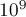
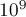

MAXimal
добавлено: 11 Jul 2008 10:53
редактировано: 6 Sep 2012 21:57
Содержание [скрыть]
Китайская теорема об остатках
Формулировка
В своей современной формулировке теорема звучит так:
Пусть , где  — попарно взаимно простые числа.
— попарно взаимно простые числа.
Поставим в соответствие произвольному числу  кортеж , где :
кортеж , где :
Тогда это соответствие (между числами и кортежами) будет являться взаимно однозначным. И, более того, операции, выполняемые над числом , можно эквивалентно выполнять над соответствующими элементами кортежами — путём независимого выполнения операций над каждым компонентом.
Т.е., если
то справедливо:
В своей первоначальной формулировке эта теорема была доказана китайским математиком Сунь-Цзы приблизительно в 100 г. н.э. А именно, он показал в частном случае эквивалентность решения системы модулярных уравнений и решения одного модулярного уравнения (см. следствие 2 ниже).
Следствие 1
Система модулярных уравнений:
имеет единственное решение по модулю  .
.
(как и выше, , числа попарно взаимно просты, а набор — произвольный набор целых чисел)
Следствие 2
Следствием является связь между системой модулярных уравнений и одним соответствующим модулярным уравнением:
Уравнение:
эквивалентно системе уравнений:
(как и выше, предполагается, что , числа попарно взаимно просты, а — произвольное целое число)
Алгоритм Гарнера
Из китайской теоремы об остатках следует, что можно заменять операции над числами операциями над кортежами. Напомним, каждому числу ставится в соответствие кортеж , где:
Это может найти широкое применение на практике (помимо непосредственного применения для восстановления числа по его остаткам по различным модулям), поскольку мы таким образом можем заменять операции в длинной арифметике операциями с массивом "коротких" чисел. Скажем, массива из элементов "хватит" на числа примерно с знаками (если выбрать в качестве -ых первые простых); а если выбирать в качестве -ых простые около миллиарда, то тогда хватит уже на число с примерно знаками. Но, разумеется, тогда нужно научиться восстанавливать число по этому кортежу. Из следствия 1 видно, что такое восстановление возможно, и притом единственно (при условии ). Алгоритм Гарнера и является алгоритмом, позволяющим выполнить это восстановление, причём достаточно эффективно.
Будем искать решение в виде:
т.е. в смешанной системе счисления с весами разрядов .
Обозначим через (,  ) число, являющееся обратным для по модулю
) число, являющееся обратным для по модулю  (нахождение обратных элементов в кольце по модулю описано здесь:
(нахождение обратных элементов в кольце по модулю описано здесь:
Подставим выражение в смешанной системе счисления в первое уравнение системы, получим:
Подставим теперь выражение во второе уравнение:
Преобразуем это выражение, отняв от обеих частей и разделив на  :
:

Подставляя в третье уравнение, аналогичным образом получаем:
![((a_3 - x_1) \cdot r_{13} - x_2) \cdot r_{23} \eq[...]](../tex2png/cache/21fcff1de8ac046e719c901fd63b9e1e.png)
Уже достаточно ясно видна закономерность, которую проще всего выразить кодом:
for (int i=0; i<k; ++i) { x[i] = a[i]; for (int j=0; j<i; ++j) { x[i] = r[j][i] * (x[i] - x[j]); x[i] = x[i] % p[i]; if (x[i] < 0) x[i] += p[i]; } }
Итак, мы научились вычислять коэффициенты  за время , сам же ответ — число — можно восстановить по формуле:
за время , сам же ответ — число — можно восстановить по формуле:
Стоит заметить, что на практике почти всегда вычислять ответ нужно с помощью Длинной арифметики, но при этом сами коэффициенты по-прежнему вычисляются на встроенных типах, а потому весь алгоритм Гарнера является весьма эффективным.
Реализация алгоритма Гарнера
Удобнее всего реализовывать этот алгоритм на языке Java, поскольку она содержит стандартную длинную арифметику, а потому не возникает никаких проблем с переводом числа из модульной системы в обычное число (используется стандартный класс BigInteger).
Приведённая ниже реализация алгоритма Гарнера поддерживает сложение, вычитание и умножение, причём поддерживает работу с отрицательными числами (об этом см. пояснения после кода). Реализован перевод числа обычного десятичкого представления в модулярную систему и наоборот.
В данном примере берутся  простых после , что позволяет работать с числами до примерно .
простых после , что позволяет работать с числами до примерно .
final int SZ = 100; int pr[] = new int[SZ]; int r[][] = new int[SZ][SZ]; void init() { for (int x=1000*1000*1000, i=0; i<SZ; ++x) if (BigInteger.valueOf(x).isProbablePrime(100)) pr[i++] = x; for (int i=0; i<SZ; ++i) for (int j=i+1; j<SZ; ++j) r[i][j] = BigInteger.valueOf( pr[i] ).modInverse( BigInteger.valueOf( pr[j] ) ).intValue(); } class Number { int a[] = new int[SZ]; public Number() { } public Number (int n) { for (int i=0; i<SZ; ++i) a[i] = n % pr[i]; } public Number (BigInteger n) { for (int i=0; i<SZ; ++i) a[i] = n.mod( BigInteger.valueOf( pr[i] ) ).intValue(); } public Number add (Number n) { Number result = new Number(); for (int i=0; i<SZ; ++i) result.a[i] = (a[i] + n.a[i]) % pr[i]; return result; } public Number subtract (Number n) { Number result = new Number(); for (int i=0; i<SZ; ++i) result.a[i] = (a[i] - n.a[i] + pr[i]) % pr[i]; return result; } public Number multiply (Number n) { Number result = new Number(); for (int i=0; i<SZ; ++i) result.a[i] = (int)( (a[i] * 1l * n.a[i]) % pr[i] ); return result; } public BigInteger bigIntegerValue (boolean can_be_negative) { BigInteger result = BigInteger.ZERO, mult = BigInteger.ONE; int x[] = new int[SZ]; for (int i=0; i<SZ; ++i) { x[i] = a[i]; for (int j=0; j<i; ++j) { long cur = (x[i] - x[j]) * 1l * r[j][i]; x[i] = (int)( (cur % pr[i] + pr[i]) % pr[i] ); } result = result.add( mult.multiply( BigInteger.valueOf( x[i] ) ) ); mult = mult.multiply( BigInteger.valueOf( pr[i] ) ); } if (can_be_negative) if (result.compareTo( mult.shiftRight(1) ) >= 0) result = result.subtract( mult ); return result; } }
О поддержке отрицательных чисел следует сказать особо (флаг функции ). Сама модулярная схема не предполагает различий между положительными и отрицательными числами. Однако можно заметить, что, если в конкретной задаче ответ по модулю не превосходит половины от произведения всех простых, то положительные числа будут отличаться от отрицательных тем, что положительные числа получатся меньше этой середины, а отрицательные — больше. Поэтому мы после классического алгоритма Гарнера сравниваем результат с серединой, и если он больше, то выводим минус, и инвертируем результат (т.е. отнимаем его от произведения всех простых, и выводим уже его).